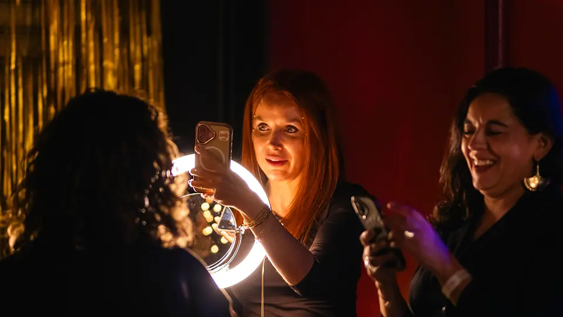
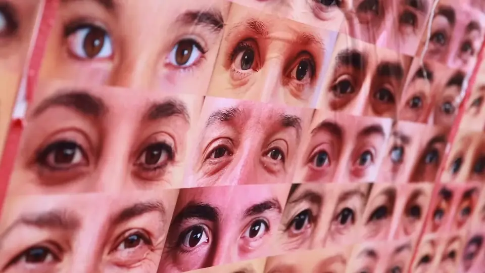
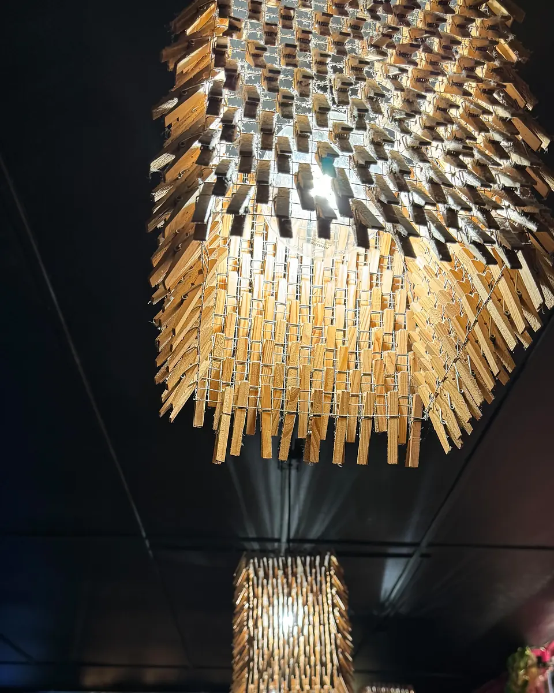
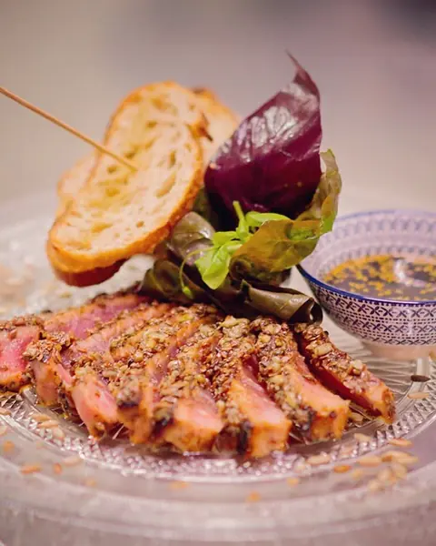
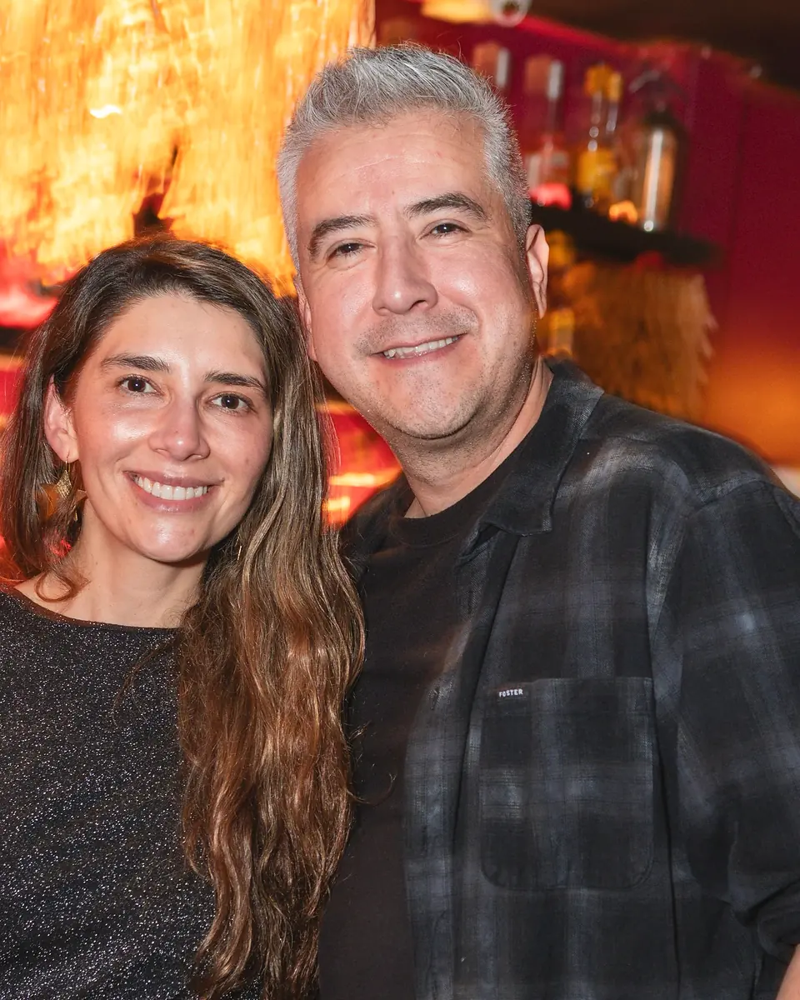
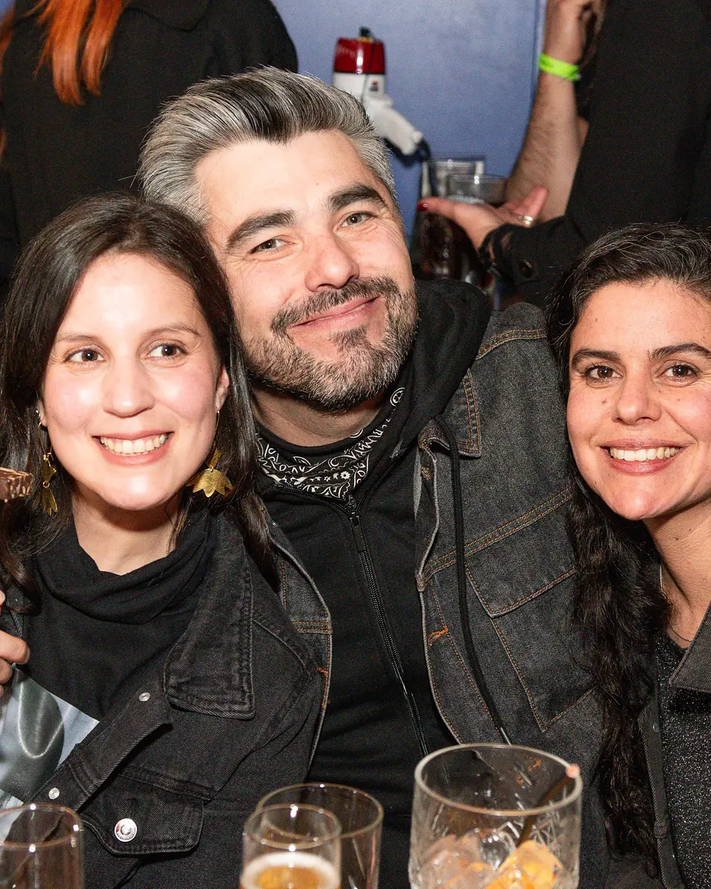
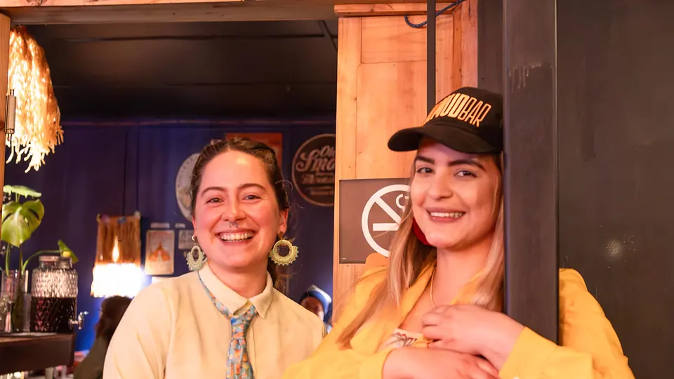

Almud Bar
Coctelería de autor, comida & música bonita desde 2014
Signature cocktails, food & lovely music since 2014
Abrimos de Mar a Sáb a las 18:00hrsOpen Tue to Sat from 6 pmSerrano 325, Castro
Foto @estudiouno.prod
Amamos los
martes
We love Tuesdays
Negroni & Fernet c/Coca Cola
Negroni & Fernet with Coca-Cola
$ 4.500
CLP 4,500
de 18:00 a 22:00 hrs
6 to 10 pm
* Siempre sujeto a stock! *
* Always subject to stock! *
aguante este clásico infalible, maravilloso, delichus, contundente, elegante, finoli
long live this classic: unfailing, marvellous, delichus [delicious], bold, elegant, finoli [posh]
siempre es un güen día pa compartir algo rico
every day is a good day to share something tasty
- MartesHoyTuesdayNegroni & Fernet c/Coca Cola
- MiércolesWednesdayPiscolein & Gin Tonic
- JuevesThursdaySangría de la casa
- ViernesFridayVenga venga que nadie le detenga!
- SábadoSaturdayRamón a $ 4.500!
Miércoles de
piscoleinnnn!
Piscolein [pisco & cola] Wednesday!

Piscolein & Gin Tonic
Piscolein [pisco & cola] & Gin Tonic
$ 4.500
CLP 4,500
de 18:00 a 22:00 hrs
6 to 10 pm
* Siempre sujeto a stock! *
* Always subject to stock! *
Mitad de semana, y es justo y necesario salir a tomar aire y muchos combinaitos itos itos!!!
Midweek: it's only right to get some fresh air and lots of little mixed drinks!!!
siempre es un güen día pa compartir algo rico
every day is a good day to share something tasty
- MartesTuesdayNegroni & Fernet c/Coca Cola
- MiércolesHoyWednesdayPiscolein & Gin Tonic
- JuevesThursdaySangría de la casa
- ViernesFridayVenga venga que nadie le detenga!
- SábadoSaturdayRamón a $ 4.500!
Jueves de
Sangría!
Sangría Thursday!
Sangría de la casa
House sangría
$ 4.500
CLP 4,500
de 18:00 a 22:00 hrs
6 to 10 pm
* Siempre sujeto a stock! *
* Always subject to stock! *
Además que con estos días, la hidrateichon es justa y muy necesaria!
Besides, in weather like this, hydreichon [hydration] is fair and very necessary!
siempre es un güen día pa compartir algo rico
every day is a good day to share something tasty
- MartesTuesdayNegroni & Fernet c/Coca Cola
- MiércolesWednesdayPiscolein & Gin Tonic
- JuevesHoyThursdaySangría de la casa
- ViernesFridayVenga venga que nadie le detenga!
- SábadoSaturdayRamón a $ 4.500!
Viernes ya!
Friday at last!

Venga venga que nadie le detenga!
Come on, come on, let nobody stop you!
Le esperamos con cantidá de cosas ricas ricas pal buche y pa empinar ese codo regalón
We're expecting you with loads of tasty things for the belly and for bending that elbow [having a drink]
siempre es un güen día pa compartir algo rico
every day is a good day to share something tasty
- MartesTuesdayNegroni & Fernet c/Coca Cola
- MiércolesWednesdayPiscolein & Gin Tonic
- JuevesThursdaySangría de la casa
- ViernesHoyFridayVenga venga que nadie le detenga!
- SábadoSaturdayRamón a $ 4.500!
Último día
de la semana
Last day of the week

Ramón a $ 4.500!
Ramón [house cocktail] for CLP 4,500!
de 18:00 a 22:00 hrs
6 to 10 pm
* Siempre sujeto a stock! *
* Always subject to stock! *
Es una precisa mezcla: gin, licor marrasquino, limón y romero.
A precise mix: gin, maraschino liqueur, lemon and rosemary.
siempre es un güen día pa compartir algo rico
every day is a good day to share something tasty
- MartesTuesdayNegroni & Fernet c/Coca Cola
- MiércolesWednesdayPiscolein & Gin Tonic
- JuevesThursdaySangría de la casa
- ViernesFridayVenga venga que nadie le detenga!
- SábadoHoySaturdayRamón a $ 4.500!
Abrimos de
Mar a Sáb
We open Tuesday to Saturday
Abrimos de Mar a Sáb a las 18:00hrs
Open Tue to Sat from 6 pm
El martes
Negroni & Fernet c/Coca Cola
Negroni & Fernet with Coca-Cola
$ 4.500
CLP 4,500
de 18:00 a 22:00 hrs
6 to 10 pm
* Siempre sujeto a stock! *
* Always subject to stock! *
siempre es un güen día pa compartir algo rico
every day is a good day to share something tasty
- MartesTuesdayNegroni & Fernet c/Coca Cola
- MiércolesWednesdayPiscolein & Gin Tonic
- JuevesThursdaySangría de la casa
- ViernesFridayVenga venga que nadie le detenga!
- SábadoSaturdayRamón a $ 4.500!
nos gusta el
colorssss!
we love colourrrs!
Somos inquietos y nos gusta el colorssss! Tratando siempre de hacer nuestro Almudcito beio para su deleite
We're restless and we love colourrrs! Always trying to make our Almudcito [our little Almud] lovely for your delight
Un lugar que fuera cálido, acogedor
A place that would be warm and welcoming

El salón
Se deslizan como angelitos, con trago en mano por los salones
They glide like little angels, drink in hand, through the rooms
Foto @isosur.prod


pa compartir, pa escuchar güena música, pa ponerle algo delichus al buche
to share, to listen to good music, to put something delichus [delicious] in the belly
Foto @estudiouno.prod

La terraza techada
Techamos parte de la terraza, le pusimos todo el colors y calor del mundo mundial
We roofed part of the terrace and gave it all the colours and warmth in the whole wide world
sin mojarse y calentit@, qué mejor?!
without getting wet and nice and warm, what could be better?!

La terraza
Tardes y nochecitas de terraza! Lo más güeno qué hay
Terrace afternoons and evenings! The best there is
Amamos los atardeceres desde nuestra terracita ita ita!
We love the sunsets from our little terrace!
Foto @catarsis.fotografia

El mural
Dicen que una mirada vale más que mil palabras…
They say a look is worth more than a thousand words…
OJO PIOJO es un proyecto hecho con mucho amor, paciencia y tiempo
OJO PIOJO [‘eyes peeled’] is a project made with a lot of love, patience and time
Proyecto @cepaz Project by @cepaz · Video @estudiouno.prod

Nos gustan los brillitos, las luces
We like sparkles and lights
Video @rober.patagonico
mejor los
tomamos todos!
best to drink them all!
Tantos coctelcitos entre los cuales decidirse! Demasiada complikeichon elegir, mejor los tomamos todos!
So many little cocktails to choose from! Too much complikeichon [complication] choosing, best to drink them all!
Tantos creadores con tantísimo talento e innumerables horas de probar, probar y probar
So many creators with so much talent and countless hours of tasting, tasting and tasting

En esta barrita pasan tantas maravillas en forma de coctelcitos
So many wonders happen at this little bar, in the shape of little cocktails
Foto @estudiouno.prod


no dejamos a nadie ajuera
we leave nobody out
un manjar pa los menores de edá, embarazás, abstemi@s
a treat for minors, pregnant folks, teetotallers
Y si usted es sobri@ y alocad@ tenemos unos mocktail que están de pelos!
And if you're sober and up for fun, we've got mocktails that are just great!
- Coctelcitos sin alcoholAlcohol-free cocktails
- Jugos & bebidasJuices & soft drinks
- Cervezas sin alcoholAlcohol-free beers
- Bebidas calientesHot drinks
pa chuparse
el bigoteli
to lick your bigoteli [little moustache]: finger-licking good

Foto @catarsis.fotografia
Mire que tenemos una cocina sencilla pero más que sabrosona!
Look, our kitchen is simple but more than tasty!
la comida que deja el ombligo pa ajuera!
food that leaves your belly button sticking out!
Si le gustan las pizzas con masa delgadita y con una propuesta choriflai de mezclas
If you like thin-crust pizzas with choriflai [cool] combinations
- PicoteosSmall plates
- GreditasGreditas [clay-pot dishes]
- SanguchesSandwiches
- Pizzas artesanalesArtisan pizzas
- Pa los chichichosFor the little ones
- Somos dulzonesSweet tooth


La carta
En su Almudcito tenemos pa todos los gustos!
At your Almudcito [our little Almud] we've got something for every taste!
Coctelería de la casa
House cocktails

Aquí te las traigo Peter $ 6.700
Este es tan lindo! Le lleva: Mistral Nobel Cristalino, licor de flor de saúco, cranberry, limoncito y un toque dulce de jarabe. Pero lejos lo más bacán es la burbuja que viene aquí!

Sagüer on Faia $ 7.900
Este es un sour bien especial: va con Mistral Nobel Fire, limón y jarabe que complementa este cóctel especiado, medio picantito y muy rico!!!

Sangría Foreva! $ 6.500
Esta versión te dejará como perro con dos colas! Vino Carménère, toda la malicia del pisco añejado, jarabe de canela, unos toques frutales infaltables y mucho amor
Mocktails de la casa
House mocktails

La moto chantá $ 6.400
Juguito de mango y maracuyá, pepino, jarabe simple, limón y bitter pepino! [El vasito va con crusta de sal]
Comilona
Comilona [food]

Tukulito Sakayama $ 15.900
Tataki de lomo de atún marinado pa chuparse el bigoteli. Acompañado de pancito y salsa de la casa.

Camarón que se duerme $ 15.900
Delichus mix: camarones, mezclado con queso crema, cebollín, cilantro, champiñones, jengibre desglasado con vino blanco

Pizza dulzona $ 12.500
Ideal para compartir! Es una pizza, pero dulce, está super delichus! Pasta de avellana, crema, frutos rojos glaseados, almendras fileteadas y hojitas de menta.
Precios de la carta oficial, octubre 2026.
no somos ná
sin ustedes!
we're nothing without you!
Pa agarrar perso, pa pasar las penas, las alegrías, celebreichons, pa entrar en calor, pa refrescarse
To work up the nerve, to get over sorrows, for joys, for celebreichons [celebrations], to warm up, to cool down

Solo
ideal pa venir a bien-tratarse a la terracita o a la barra
ideal for coming to treat yourself well on the terrace or at the bar
Foto @estudiouno.prod

En pareja
celebremos el amor en todas sus formas, con las piernas, amiguis, hij@s, como usté quiera!
let's celebrate love in all its forms: with your piernas [other half], amiguis [friends], kids, however you like!

Con amigos
celebrar la vida, la amistad, el amors y el buen clima
celebrate life, friendship, love and good weather


A celebrar
A celebrar se ha dicho!
Let's celebrate, it's decided!
Foto @estudiouno.prod

Sin motivo
porque usté se lo merece y punto!
because you deserve it, full stop!
Peazo de equipo
que tenemos!
What a team we've got!

Nuestras chicas super poderosas, super bacanas y super hermosas!
Our super-powered, super-cool, super-beautiful girls!
Est@s guapetones son parte de nuestro equipo, son los encargados de barra y salón
These good-lookers are part of our team, in charge of the bar and the room
le ponen una sonrisota con cada cóctecito ito ito, comida delichus y la atención más güena!
they bring a big smile with every little cocktail, delichus [delicious] food and the best service!
@pablete_bartender_ @javier.agmc @lizzearellano @milagroosjm @eduu.ardoo @elymar_bocarejo @jaav11 @daweed.cagliano @haqum.v99
los papis del almud: el franchuto @rusio_mezclao y la disharashera @cepaz
the Almud parents: the Frenchie @rusio_mezclao and the disharashera [a play on ‘dicharachera’, chatty] @cepaz
lo rico de
nuestro barsucho
how good our little bar is
4,6 Google (848 reseñas) · 4,6 Tripadvisor (209 reseñas, #1 de 6 bares en Castro) · oct-2026Google 4.6 · 848 reviews — Tripadvisor 4.6 · 209 reviews · #1 of 6 bars in Castro
What really sets Almud apart is that the food isn't an afterthought – it's fantastic.
Lo que de verdad distingue a Almud es que la comida no es un detalle de último momento: es fantástica.
Ahora entiendo porque se habla tanto del lugar. Lindo, rapido, rico, céntrico y económico. Super sugerido
Now I understand why people talk about this place so much. Lovely, quick, tasty, central and affordable. Highly recommended
The bar tenders are artists, sit on the bar and watch.
Los bartenders son artistas: siéntese en la barra y mire.
su terraza permite con sol o lluvia una tremenda vista
its terrace gives a tremendous view, sun or rain
Super soirée à Castro ! Le service est sympa, super ambiance, avec musique très sympa!
¡Gran noche en Castro! Atención simpática, gran ambiente, con música muy simpática.
Great night out in Castro! Friendly service, great atmosphere, with really nice music!
Estuve ahí cada día de mi estancia, porque es imposible no volver.
I was there every day of my stay, because it's impossible not to go back.
tirar la casa
por la ventana!
to throw the house out the window [to go all out]!
Nos vemos en las próximas cositas que se vienennnn bomba
See you at the next little things coming up, they'll be a blast
FebreroEste mesPróximo
14F
Amamos el 14F pa brindar en honor al amor!
We love 14F [Valentine's Day] to raise a glass to love!
2024 · 2025 · 2026
MarzoEste mesPróximo
chaolin bombín al verano
Y se nos van los mesesitos queridos de verano y vakeichons… y hay que despedirlos como corresponde
Our dear summer months and vakeichons [holidays] are leaving us… and they must be sent off properly
2024 · 2026
JulioEste mesPróximo
nuestro mes de aniversario
Cuánto coctelcito ha pasado bajo este puente
So many little cocktails under this bridge
2023 (9) · 2024 (10) · 2025 (11) · 2026 (12)
JulioEste mesPróximo
Tiki Night
con todo el sabor tiki!
with all the tiki flavour!
2025
SeptiembreEste mesPróximo
fondita ita ita
Nos endieciochamos contra viento y marea
We go full dieciocho [Chile's national holidays] come wind or high water
2023 · 2024 · 2025 · 2026
SeptiembreEste mesPróximo
negroni week
esperada por much@s ya está aquí
awaited by many, it's here
2025 · 2026
OctubreEste mesPróximo
Jalogüín
traguitos y travesuras 1313
little drinks and mischief, hee hee [1313]
2023 · 2024 · 2025
asegure su entrá hablándonos al DM!get your ticket by messaging us on Instagram!Ver en Instagram


Venga venga,
le esperamos!
Come on, come on, we're expecting you!
Si usté no ha venido, vengase pa acá, ya le estamos esperando
If you haven't been yet, come on over, we're expecting you
- Horario
- Abrimos de Mar a Sáb a las 18:00hrsOpen Tue to Sat from 6 pm
- Dirección
- Serrano 325, Castro
Al frente del Centro Cultural de CastroOpposite the Castro Cultural Centre - Teléfono
- +56 65 253 0084
- @almud_bar
Nuestro bazar @bazar_almudOur shop: @bazar_almud
Video @estudiouno.prod

Foto @estudiouno.prod